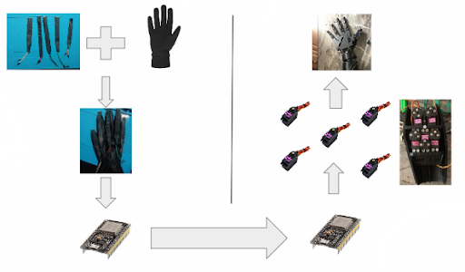

P r o j e c t D e s c r i p t i o n —
Robotic Hand
Introduction
The development of robotic hands that imitate human hand movements is a useful technological achievement that has the potential to improve the lives of human beings and become an important part of various industries, such as prosthetics,manufacturing, chemical industry, etc. with further development of this device, it can improve safety and provide greater efficiency, enhance our ability to interact with the environment and perform tasks with greater ease and accuracy.
One of the primary applications of such robotic hands is in the field of prosthetics. This project will help people with disabilities to interact with the environment using these devices. With future development of this project, individuals with amputations will be able to perform a wide range of tasks, such as grasping objects, typing, and even playing musical instruments. This can improve their quality of life and offer greater independence.
Chemical industry is another field which can benefit from the application of robotic hands. It is known that in this industry, people constantly interact with dangerous and hazardous substances that cause significant health risks, accidents and injuries. With the use of robotic hands, the risks are reduced considerably since robotic hands can handle such materials without the need of direct human interaction. Additionally, these robotic hands have potential to be used to handle chemicals in environments that are difficult or impossible for humans to access, such as confined spaces, high-temperature areas, or areas with high radiation levels. Thus, the project is a step forward in further enhancing safety and reducing the risk of human exposure to hazardous substances.
Overall, using robotic hands in a variety of sectors has several advantages, such as better safety, less danger of exposure to harmful materials, and improved efficiency and precision while handling these materials. These tools have the potential to transform the way we work and interact with the environment, enhancing independence and quality of life for those who have had amputations and lowering the risk of disease and injury for those who work in sectors like manufacturing and chemical production.
Body
The aim of this project was to create a robotic hand which imitates human hand movements. Visually, you can see the scheme on figure 1. We use a glove equipped with bending sensors. The glove is worn on the actual hand, and the sensors are placed on top of each finger. These sensors are actually variable resistors, which can be detected by the voltage change using ADC pins and afterwards this information is transmitted to the ESP32 board for the processing.The ESP32 board is a microcontroller that processes the information received from the sensors. It is responsible for interpreting the sensor data and acting as a server, listening to the incoming requests from the second ESP32 board and sending corresponding data.
The second ESP32 board is responsible for controlling the robotic hand. It sends HTTP GET requests to the server and uses the data received to calculate the angle values required for the robotic fingers to bend or unflex. These angle values are then sent to five servo motors placed in the robotic hand. The servo motors are responsible for moving the fingers of the robotic hand to match the movements of the human hand.
In our project, we have utilized various components such as flex sensors, a glove, ESP32 boards, servo motors, and a robotic hand, as depicted in Figure 1. Notably, we have made the flex sensors by employing velostat material.Furthermore, we bought and assembled a 3D printer, followed by the printing of the necessary robotic hand parts.Subsequently, we have meticulously assembled the various parts to construct the robotic hand.
